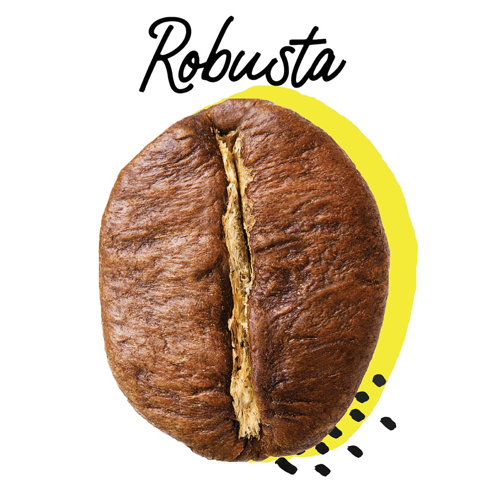

Виды кофе
Арабика

Арабика – самый популярный вид кофе в мире, составляющий более 60% мирового производства. Она ценится за свой мягкий, сбалансированный вкус с богатой ароматической палитрой. Вкус арабики может варьироваться от сладкого и фруктового до цветочного и орехового, в зависимости от места произрастания и обработки. Арабика имеет более высокую кислотность, чем робуста, что придает ей освежающий и яркий вкус. Содержание кофеина в арабике ниже, чем в робусте.
Робуста
Робуста – второй по популярности вид кофе, отличающийся более высоким содержанием кофеина и более интенсивным, терпким вкусом. Она обладает сильным, горьковатым вкусом с землистыми и ореховыми нотами. Робуста менее кислая, чем арабика, и имеет более высокую плотность, что делает ее идеальной для эспрессо и напитков, требующих насыщенного вкуса. Благодаря высокому содержанию кофеина, робуста придает напиткам бодрящий эффект.
Либерика
Либерика – менее распространенный вид кофе, чем арабика и робуста. Она имеет уникальный, сильный аромат с дымными и фруктовыми нотами. Вкус либерики часто описывают как пряный, с оттенками табака и шоколада. Либерика имеет более низкое содержание кофеина, чем робуста, и обладает более резким, интенсивным вкусом.
Эксельса
Эксельса – редкий вид кофе, который часто путают с либерикой из-за схожести во вкусе и аромате. Она обладает сложным вкусом с фруктовыми и цветочными нотами, а также легкой кислинкой. Эксельса имеет среднее содержание кофеина и часто используется в смесях для придания им уникальных вкусовых оттенков.